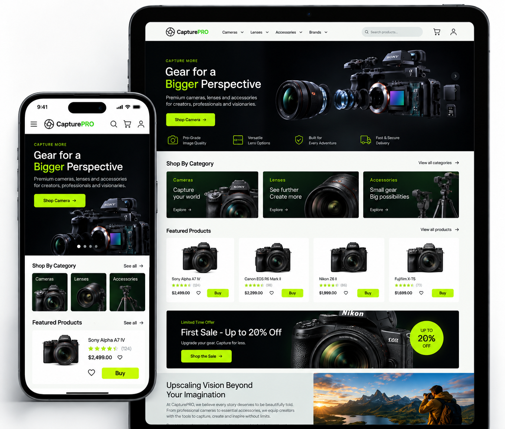
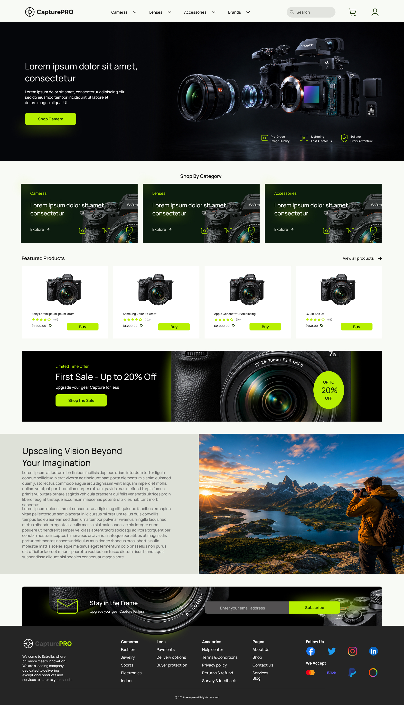
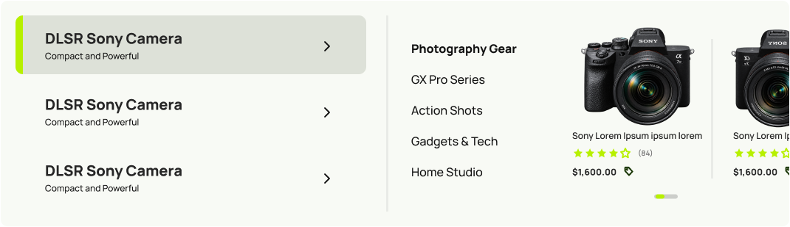
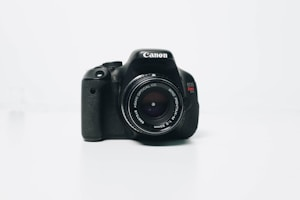

Beginner Creators
Customers purchasing their first camera may not understand complex specifications. They need clear categories, helpful product information, and simple ways to explore suitable equipment.

Website Design · E-commerce · Concept Project · 2026
CapturePRO is a concept e-commerce website designed to help photographers, filmmakers, and content creators discover and purchase cameras, lenses, and accessories with less effort.
The Challenge
Customers often need to compare several technical features, understand product compatibility, evaluate prices, and decide which equipment is suitable for their experience level.
Many camera-store websites present too much information at once, making it difficult for customers to explore products or confidently choose what to buy. The challenge was to design an e-commerce homepage that made a large technical product catalogue feel organised, approachable, and easy to browse.
The Goal
Create a modern shopping experience that helps customers understand what CapturePRO offers immediately, find the right products easily, and feel confident taking the next step toward a purchase.
Understanding the Users
Customers purchasing their first camera may not understand complex specifications. They need clear categories, helpful product information, and simple ways to explore suitable equipment.
Experienced users often know exactly what they need. They require efficient navigation, clear product names, specifications, brands, prices, and compatibility information.
These users may be looking for cameras, lenses, storage, audio equipment, lighting, or other accessories that support a complete production setup.
Enthusiasts want to discover new products, compare equipment, explore promotions, and upgrade their existing gear.
Design Goals
Make it easy for customers to move from the homepage to cameras, lenses, accessories, brands, and featured products.
Use clear product information, ratings, prices, visual hierarchy, and recognisable shopping patterns to support purchase decisions.
Present important product benefits and promotions without filling the page with distracting advertisements.
Place clear calls to action throughout the page so customers always understand what they can do next.
Use a bold visual direction that reflects the precision, quality, and technical nature of professional photography equipment.
The Homepage
The homepage was organised around a simple journey — from brand introduction through product discovery to a confident purchase decision.
The header provides direct access to Cameras, Lenses, Accessories, Brands, Search, Cart, and Account.
The hero introduces the store's main value and immediately directs customers toward the camera collection.
Short benefit statements communicate image quality, autofocus performance, and product durability.
Customers can quickly choose between cameras, lenses, and accessories without browsing the entire catalogue.
A curated selection introduces popular products with images, ratings, prices, and direct purchase actions.
The sale section highlights a limited-time discount and creates an additional path into the product catalogue.
An editorial section connects the products to the experiences customers want to capture.
Visitors can subscribe for product updates, photography information, and promotional offers.
Provides access to support, policies, product categories, company information, social platforms, and payment options.


Interaction Design
The mega menu was designed to support both exploratory and direct shopping behaviour. Hovering a category surfaces product types alongside featured items, reducing clicks while keeping navigation predictable.

Find the right camera for every moment, project, and creative ambition.
Explore lenses that bring more clarity, depth, and character to every shot.
Complete your setup with reliable tools designed to support your workflow.
Visual direction
CapturePRO's visual identity was designed to feel modern, precise, bold, and professional.
#b7f000 · AccentRepresents energy, creativity, and action. Used on buttons, icons, ratings, and key interface elements.
#163300 · secondaryCreates a strong connection to the primary accent while giving a more premium appearance to supporting sections.
#111111 · BackgroundDark surfaces reflect the professional look of photography equipment and allow product images to feel dramatic.
#f8faf5 · SurfaceReduces visual weight of dark sections and improves readability throughout the shopping experience.
Capture Pro
Large headings establish strong hierarchy.
A lens for every vision and every frame.
Keeps product descriptions and body text readable.
Photography Gear
Helps customers scan the page quickly.
A cross-discipline toolkit applied across this project and beyond — spanning visual strategy to pixel-level craft.
The final homepage creates a clear journey from brand introduction to product discovery and conversion. Strong product photography establishes a premium first impression, while category cards, featured items, promotional content, and repeated calls to action help customers move through the experience naturally.
As a concept project, the design has not yet been tested against live conversion or sales data. Its effectiveness would be validated through prototype testing and post-launch analytics.

This project strengthened my understanding of how visual design and information hierarchy work together in e-commerce.
A successful homepage should not try to display every available product. Instead, it should give customers clear starting points, reduce uncertainty, and guide them toward the information they need.
I also learned the importance of balancing large promotional images with practical shopping details such as categories, prices, ratings, search, and calls to action.
More examples of design that drives results.
A research-driven redesign focused on reducing cognitive load, improving financial visibility, and making frequently used banking actions easier to discover.
Read case study Aierth Technologies
Aierth TechnologiesI worked across the brand and digital product experience, translating Aierth's business vision into a visual identity, website experience, marketing ecosystem, and scalable design language.
Read case study